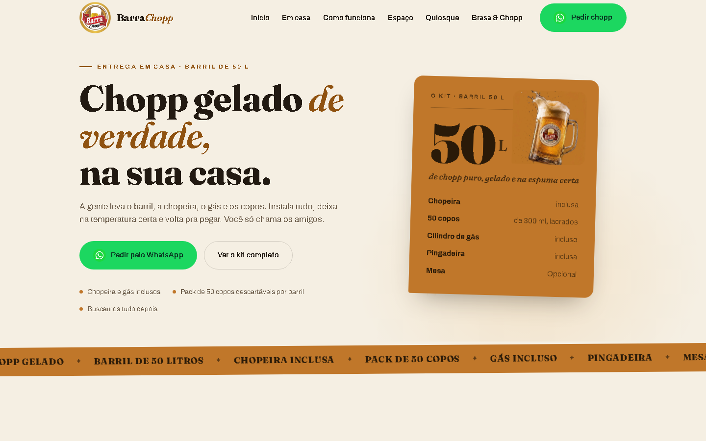

Destaque
LIVEBarraChopp — Site institucional em produção
Site institucional para o Barra Chopp, com apresentação do espaço, cardápio, kit de chope e contato direto pelo WhatsApp. Projeto completo de ponta a ponta: design, front-end e publicação.
- HTML
- CSS
- JavaScript
- Responsive